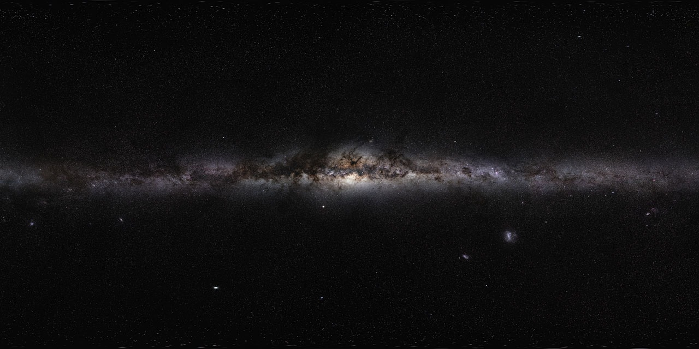

!DOCTYPE html>
<html lang="en">
<head>
    <meta charset="UTF-8">
    <meta name="viewport" content="width=device-width, initial-scale=1.0">
    <title>Solar System</title>
    <script src="https://aframe.io/releases/1.2.0/aframe.min.js"></script>
</head>
<body>
    <a-scene>
        <!--Assets-->
        <a-assets>
            
            </a-assets>

        <!--sky-->
        <a-sky src="#sky"></a-sky>

      
      
        <!--Sun-->


        <a-entity rotation="0 0 0" animation="property: rotation; to: 0 360 0; loop:5; dur: 10000">
            <a-sphere position="0 0 0" radius="1.5"  color="yellow"></a-sphere>
    </a-entity>
        <!--Planets-->
        <a-entity rotation="0 0 0" animation="property: rotation; to: 0 360 0; loop:true; dur:7000">
            <a-sphere position="3 0 0" radius="0.3" color="	#DC143C"></a-sphere>
        </a-entity>
        <a-entity rotation="0 0 0" animation="property: rotation; to: 0 360 0; loop:true; dur:9500">
        <a-sphere position="5 0 0" radius="0.5" color="#FFA500"></a-sphere> <!--venus-->  
    </a-entity> 
    <a-entity rotation="0 0 0" animation="property: rotation; to: 0 360 0; loop:true; dur:8500">
        <a-sphere position="7 0 0" radius="0.6" color="#FFE4E1"></a-sphere><!--Earth-->
    </a-entity>
    <a-entity rotation="0 0 0" animation="property: rotation; to: 0 360 0; loop:true; dur:10000">
        <a-sphere position="9 0 0" radius="0.5" color="#2E8B57"></a-sphere><!--Mars-->
    </a-entity>
    <a-entity rotation="0 0 0" animation="property: rotation; to: 0 360 0; loop:true; dur:9000">
        <a-sphere position="11 0 0" radius="0.9" color="#4682B4"></a-sphere><!--Jupiter-->
    </a-entity>
    <a-entity rotation="0 0 0" animation="property: rotation; to: 0 360 0; loop:true; dur:7500">
        <a-sphere position="13 0 0" radius="0.7" color="#00CED1	"></a-sphere><!--Saturn-->
    </a-entity>
    <a-entity rotation="0 0 0" animation="property: rotation; to: 0 360 0; loop:true; dur:11000">
        <a-sphere position="15 0 0" radius="0.6" color="#DDA0DD"></a-sphere><!--Jupiter-->
    </a-entity>
    <a-entity rotation="0 0 0" animation="property: rotation; to: 0 360 0; loop:true; dur:10500">
        <a-sphere position="17 0 0" radius="0.5" color="#FF69B4"></a-sphere><!--Neptune-->
    </a-entity>

        <!--Orbit paths-->
        <a-ring position="0 0 0" radius-inner="2.5" radius-outer="3.5" color="#555" opacity="0.4" rotation="-90 0 0"></a-ring>
        <a-ring position="0 0 0" radius-inner="4.5" radius-outer="5.5" color="#555" opacity="0.4" rotation="-90 0 0"></a-ring>
        <a-ring position="0 0 0" radius-inner="6.5" radius-outer="7.5" color="#555" opacity="0.4" rotation="-90 0 0"></a-ring>
        <a-ring position="0 0 0" radius-inner="8.5" radius-outer="9.5" color="#555" opacity="0.4" rotation="-90 0 0"></a-ring>
        <a-ring position="0 0 0" radius-inner="11.5" radius-outer="12.5" color="#555" opacity="0.4" rotation="-90 0 0"></a-ring>
        <a-ring position="0 0 0" radius-inner="15.5" radius-outer="16.5" color="#555" opacity="0.4" rotation="-90 0 0"></a-ring>
        <a-ring position="0 0 0" radius-inner="19.5" radius-outer="20.5" color="#555" opacity="0.4" rotation="-90 0 0"></a-ring>
        <a-ring position="0 0 0" radius-inner="23.5" radius-outer="24.5" color="#555" opacity="0.4" rotation="-90 0 0"></a-ring>
       
        <!--Light Source-->
        <a-light type="directional" position="2 10 5" target="a-camera"></a-light>

        <!--camera-->
         <a-camera position="0 3 10" look-controls="enabled:true"></a-camera>      
    
    </a-scene>

    
</body>
</html>